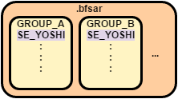
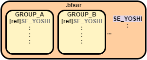
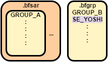
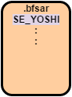

サウンドデータを再生するには、リソースファイルからメモリ上にデータを読み込む必要があります。
AtkSimple サンプル では、使用するサウンドデータを nn::atk::FsSoundArchive から nn::atk::SoundDataManager::LoadData で個別に読み込みましたが、
実際のゲームでは、リソースファイルが小さく全てのサウンドデータをメモリに配置したい場合や、ゲームシーンで使用するサウンドデータをまとめて読み込みたい場合、
特定のゲームシーンでのみ使用したいサウンドデータがある場合など、色々なケースが考えられます。
このようなリソースの読み込みに関係する機能について説明を行います。
SoundMaker で作成したサウンドアーカイブファイル(.bfsar)を使用する方法として、
Atk ライブラリでは大別して nn::atk::MemorySoundArchive と nn::atk::FsSoundArchive という２つの異なる形式の使用方法があります。
(nn::atk::AddonSoundArchive というサウンドアーカイブも別にありますが、こちらについては「追加サウンドアーカイブを使った読み込み」の項で別途説明します)
リソースの読み込み方法はサウンドアーカイブの形式によって異なり、メモリの使用量やファイルアクセスに影響しますので、ゲームに応じて選択ください。
|
|
MemorySoundArchive | FsSoundArchive |
|---|---|---|
| .bfsar の扱い方 | .bfsar を全てメモリ上に配置 | .bfsar のうち、必要なデータをメモリ上に配置 |
| 推奨用途 |
.bfsar が小さい、もしくはメモリに余裕がある場合 |
メモリ使用量を抑えたい場合 |
| メモリの使用量 | 大 | 小～中 |
| ファイルアクセス | 最初に配置する時以外は発生しない | 適宜サウンドデータの読み込みが発生 |
サウンドアーカイブファイルを全てメモリ上に配置します。
サウンドデータが全てメモリ上に配置されるため、再生前に読み込みを行う必要はなくなりますが、メモリの使用量は大きくなります。
リソースファイルが小さい場合や、メモリに十分な余裕がある場合で、細かいリソース読み込みの管理を行いたくない場合に適しています。
MemorySoundArchive を使用する場合は、サウンドアーカイブの初期化前にサウンドアーカイブファイル(.bfsar)をメモリ上に読み込む必要があります。
.bfsar をメモリ上に読み込んだ後、読み込んだ領域のアドレスを nn::atk::MemorySoundArchive::Initialize に渡してください。
あとは Atk ライブラリの基本的な初期化を行えば、nn::atk::SoundDataManager::LoadData を呼ばなくても .bfsar に含まれるサウンドの再生が可能になります。
MemorySoundArchive を使用する場合、ストリームサウンドを再生することができません。
ストリームサウンドの再生には nn::atk::SoundArchive::SetExternalFileRoot に適切なルートディレクトリを設定する必要があります。
サウンドアーカイブファイルのうち、必要なサウンドデータだけを読み込みメモリ上に配置します。
必要なサウンドデータだけをメモリ上に配置することで、メモリの使用量を抑えることができますが、
いつ、どのサウンドデータを読み込むかといったリソース読み込みの管理を行う必要があります。
必要なサウンドデータだけメモリ上に配置し、メモリの使用量を管理したい場合に適しています。
リソース読み込みの管理については、メモリー管理 で紹介されている各種ヒープや、後述のグループ機能と組み合わせる事で管理しやすくなる場合があります。
ゲームに応じて、これらの機能も併せてご利用ください。
クイックスタート の「サウンドアーカイブの初期化」に説明がありますので、そちらを参照ください。
追加サウンドアーカイブとは、 SoundArchivePlayer の初期化後に、初期化時に設定した FsSoundArchive や MemorySoundArchive と組み合わせて、 サウンドアイテムの追加ができるアーカイブです。
（以降、 FsSoundArchive や MemorySoundArchive をメインサウンドアーカイブと記載します）
メインサウンドアーカイブと追加サウンドアーカイブを組み合わせて使うことで、複数のサウンドアーカイブを 1 つの SoundArchivePlayer で扱うことができるようになります。
特定の場面でのみ必要とされるサウンドや、 追加コンテンツに含まれるサウンドを追加サウンドアーカイブ化し、
それをサウンドアーカイブプレイヤーに追加することで、必要なタイミングでサウンドアイテムを追加することができます。
また、使い終わった追加サウンドアーカイブはサウンドアーカイブプレイヤーから削除することで、サウンドアイテムを取り除くことが出来るため、
常駐するサウンドアイテムを減らし、メモリ使用量を減らすことも可能です。
以下では、追加サウンドアーカイブの仕様と、使い方についての解説を行います。
追加サウンドアーカイブ (nn::atk::AddonSoundArchive) は、 MemorySoundArchive を継承しているため、 MemorySoundArchive と同様にサウンドアーカイブファイルをメモリ上に読み込んで使用します。
このため、リソース読み込みやファイルアクセス、アイテムの文字列読み込みなどに関する扱いは、 MemorySoundArchive と同じとなります。
追加サウンドアーカイブのアイテムの扱いに関しては、 「ガイド／追加サウンドアーカイブ」のページをご参照ください。
はじめに、使用しうる最大の追加サウンドアーカイブの数を指定して、 SoundArchivePlayer を初期化します。
続いて、追加サウンドアーカイブとなるサウンドアーカイブファイル (.bfsar) をメモリ上に読み込みます。MemorySoundArchive と同様の手順になります。
.bfsar をメモリ上に読み込んだ後、追加サウンドアーカイブと、追加サウンドアーカイブが使用する SoundDataManager の初期化を行います。
その後、初期化が既に完了している SoundArchivePlayer へ追加サウンドアーカイブの追加を行います。
これにより、追加サウンドアーカイブに含まれるサウンドを再生できるようになります。
追加サウンドアーカイブに含まれるサウンドを再生するためには、再生時に追加サウンドアーカイブの名前を引数として指定します。
追加サウンドアーカイブは機能的に MemorySoundArchive と同等であるため、nn::atk::SoundDataManager::LoadData を呼ぶ必要はありません。
使用が完了したら、 SoundArchivePlayer から追加サウンドアーカイブを削除します。
削除後、追加サウンドアーカイブと、追加サウンドアーカイブが使用する SoundDataManager の終了処理を行い、メモリを破棄します。
サウンドデータを読み込む際、同じタイミングで読み込むデータをまとめて、グループとして読み込むことができます。
グループを使用する事でサウンドデータを個別で読み込む手間を省けるほか、データをまとめることで読み込み処理の効率がよくなる場合もあります。
SoundMaker で設定したグループの形式によって、データの重複の有無や読み込み方法などが異なりますので、ゲームの用途に応じて選択ください。
(SoundMaker でのグループの設定方法については、SoundMaker ドキュメントの グループ を参照ください)
(プログラム上でのグループの読み込み方法の違いについては AtkGroup サンプル を参照ください)
|
|
埋め込みグループ | リンクグループ | ユーザ管理グループ | グループなし |
|---|---|---|---|---|
| サウンドデータの扱い | グループに埋め込まれる形で .bfsar に含まれる | .bfsar のグループではない領域に含まれ、 グループには参照情報だけが含まれる |
別ファイル(.bfgrp)に出力される |
.bfsar のグループではない領域に含まれる |
| 推奨用途 | ファイル読み込みを効率的に行いたい場合 | データの重複を抑えサイズを小さくしたい場合 | ゲーム側でファイルアクセス処理の管理を行いたい場合 | データを個別に読み込みたい場合 |
| データの重複の有無 | 属するグループ毎にデータが存在し、 .bfsar 内で重複が発生する場合がある |
グループを跨いでデータが存在し、 .bfsar 内で重複は発生しない |
.bfgrp 毎にデータが存在し、 .bfsar や別の .bfgrp と重複が発生する場合がある |
グループにデータは存在しないため、 他のグループと重複が発生する場合がある |
| データの読み込み方法 | グループ内の他のデータと一緒に読み込まれる |
リンクに指定されたデータは |
.bfgrp 内の他のデータと一緒に読み込める ゲーム側で読み込む必要があるが、別ファイルのため オーディオ以外のファイルとアーカイブする事も可能 |
サウンドデータ毎に読み込みが発生する |
対象のサウンドデータをグループに含めます。
所属するグループ毎にデータが含まれるため、グループ間でデータの重複が発生する場合がありますが、
グループ内の他のデータと一緒に読み込めるため、個別に読み込むよりもファイルアクセスの効率がよくなることが期待できます。
リソースファイルやメモリのサイズにある程度余裕があり、ファイルアクセス処理の効率をよくしたい場合に適しています。

対象のサウンドデータが含まれるグループを nn::atk::SoundDataManager::LoadData で読み込んでください。
bool result = g_SoundDataManager.LoadData( GROUP_EMBEDDED, &g_SoundHeap ); |
対象のサウンドデータをグループに含めず、サウンドアーカイブファイル(.bfsar)に含めます。
データが複数のグループに所属している場合、データの重複を防ぐことができますが、
グループ内の他のデータとは別に読み込みを行うため、埋め込みグループに比べてファイルアクセス処理が増える場合があります。
ファイルアクセス処理にある程度余裕があり、リソースファイルやメモリのサイズを節約したい場合に適しています。

埋め込みグループと同様に、対象のサウンドデータが含まれるグループを nn::atk::SoundDataManager::LoadData で読み込んでください。
bool result = g_SoundDataManager.LoadData( GROUP_LINKED, &g_SoundHeap ); |
対象のサウンドデータをグループファイル(.bfgrp)として別ファイルに出力し、ゲーム側でグループファイルの管理を行います。
データの重複や読み込み処理についての特徴は、埋め込みグループの場合に似ていますが、
別ファイルになることで、ゲーム側でのファイルアクセス処理の管理が可能になります。
例えば、あるゲームシーンで使用するグラフィックスのファイルとサウンドのグループファイルをまとめてアーカイブして読み込むことで
埋め込みグループよりもファイルアクセス処理の効率がよくなる場合があります。
このようなゲーム側でのファイルアクセス処理の管理を行いたい場合に適しています。

サウンドアイテムがユーザー管理グループにのみ属している場合、プレイヤーヒープを使った再生はできません。
プレイヤーヒープを使って再生を行いたい場合は、対象のサウンドアイテムが以下のどちらかになるように調整ください。
対象のサウンドデータが含まれるグループファイル(.bfgrp)を読み込んだ領域のアドレスを nn::atk::SoundDataManager::SetFileAddressInGroupFile に設定してください。
bool result = g_SoundDataManager.SetFileAddressInGroupFile( g_pMemoryForGroupFile, g_GroupFileSize ); |
サウンドデータを特定のグループには含めずに運用します。
サウンドデータの読み込みを個別に行いたい場合に適しています。

対象のサウンドデータを nn::atk::SoundDataManager::LoadData で読み込んでください。
AtkSimple サンプル ではこの方法でロードを行っています。
bool result = g_SoundDataManager.LoadData( SE_YOSHI, &g_SoundHeap ); |